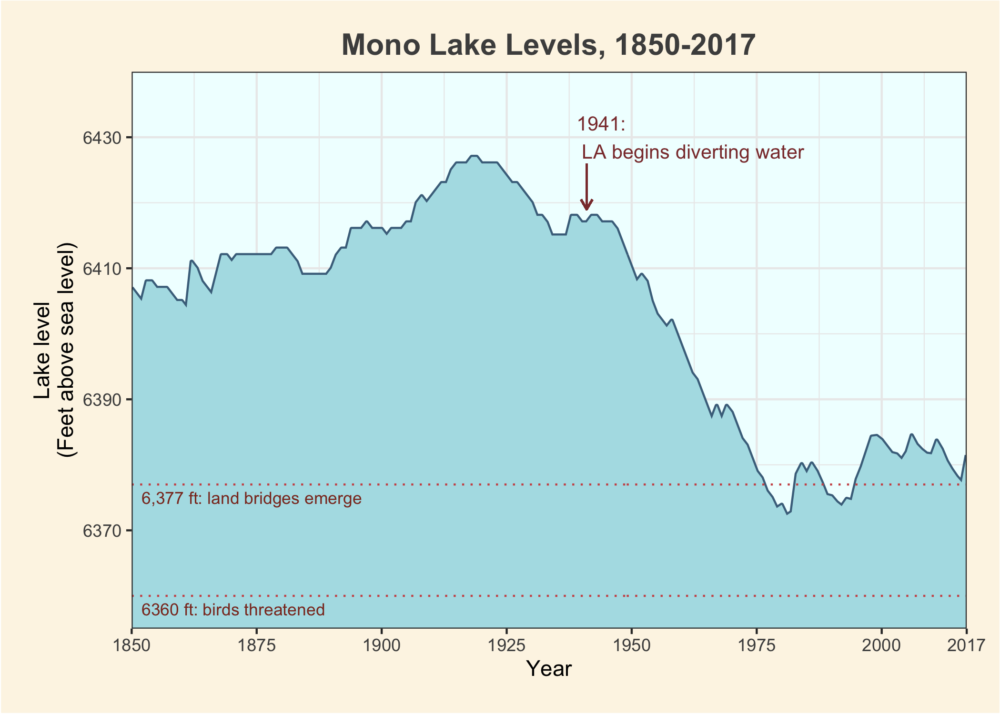

Let’s make a graph!
# ggplot begins simple...
ggplot(data = clean_mono_levels,
aes(x = year,
y = lake_level_feet_above_sea_level)
) +
labs(x = "Year",
y = "Lake level\n(Feet above sea level)",
title = "Mono Lake Levels, 1850-2017"
) +
geom_line(color = "skyblue4",
size = 1) +
# Ribbon plots let us fill in the lake level, for a more intuitive volume feel
geom_ribbon(aes(ymin = 6355,
ymax = lake_level_feet_above_sea_level),
fill = "powderblue") +
theme_bw() +
# We can change the background and margin color with arguments in `theme`
theme(panel.background = element_rect(fill = "azure1"),
panel.border = element_rect(fill = NA),
plot.background = element_rect(fill = "oldlace"),
# And change the border width
plot.margin = margin(t = 0.6,
r = 0.6,
b = 0.6,
l = 0.6,
unit = "cm"),
# And add a few adjustments to the title text
plot.title = element_text(face = "bold",
hjust = 0.5,
size = 15,
color = "grey30"),
) +
# One thing ggplot annoyingly does is expand the axes beyond your limits. We can change this using the `expand = c(0,0)` argument
scale_x_continuous(limits = c(1850, 2017),
breaks = c(1850, 1875, 1900, 1925, 1950, 1975, 2000, 2017),
expand = c(0, 0))+
scale_y_continuous(limits = c(6355, 6440),
expand = c(0, 0),
breaks = seq(6350, 6430, 20)
) +
# For easier interpretation, we can add a few important annotations highlighting events:
annotate("text",
label = "1941:\n LA begins diverting water",
y = 6430,
x = 1939,
hjust = 0,
size = 3.5,
color = "indianred4") +
# And add some reference lines
geom_line(aes(y = 6360),
color = "indianred3",
linetype = "dotted") +
annotate("text",
label = "6,377 ft: land bridges emerge",
x = 1852,
y = 6375,
color = "tomato4",
size = 3,
hjust = 0) +
geom_line(aes(y = 6377),
color = "indianred3",
alpha = 1,
linetype = "dotted") +
annotate("text",
label = "6360 ft: birds threatened",
x = 1852,
y = 6358,
color = "tomato4",
size = 3,
hjust = 0) +
# geom_segment has an option to create an arrow!
geom_segment(aes(x = 1941,
xend = 1941,
y = 6419,
yend = 6426),
color = "indianred4",
arrow = arrow(ends = "first",
type = "open",
length = unit(0.2,"cm")
)
)
# And when we're done, we can save the plot using ggsave.
ggsave("good_graph.png", last_plot())